Стикер-арт · Москва
SPLASH!
Стикеры, постеры, арт-магниты и коллаборации с художниками.
Написать в Telegram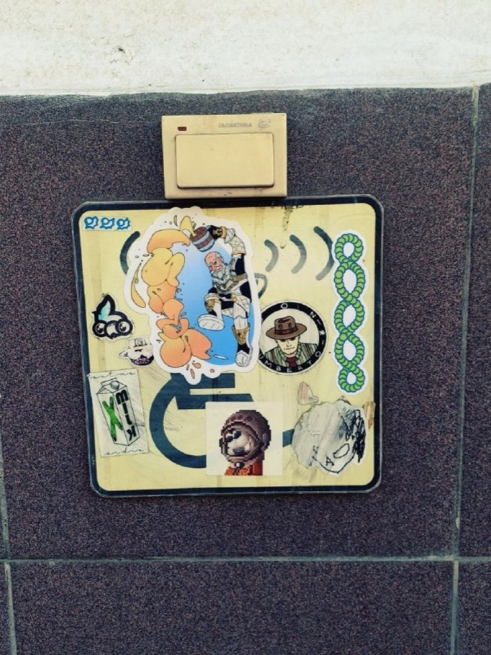
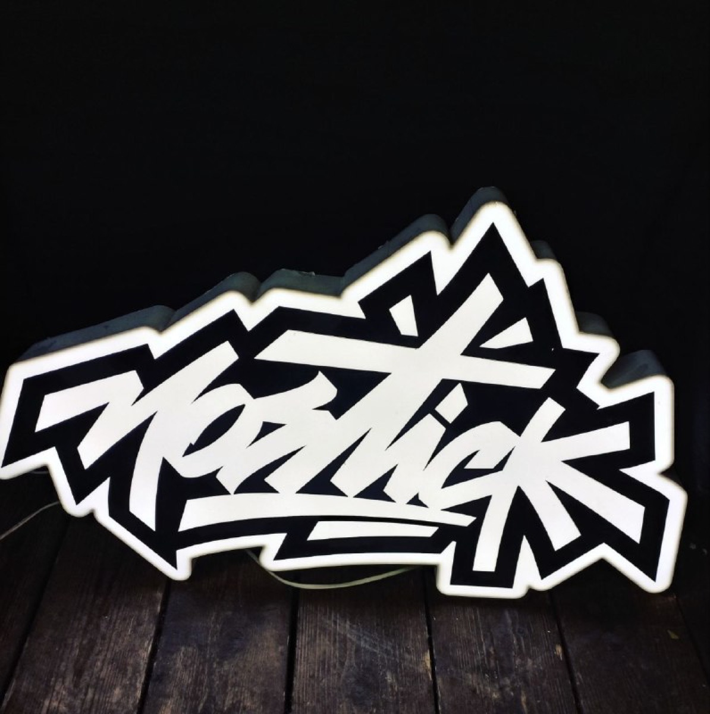
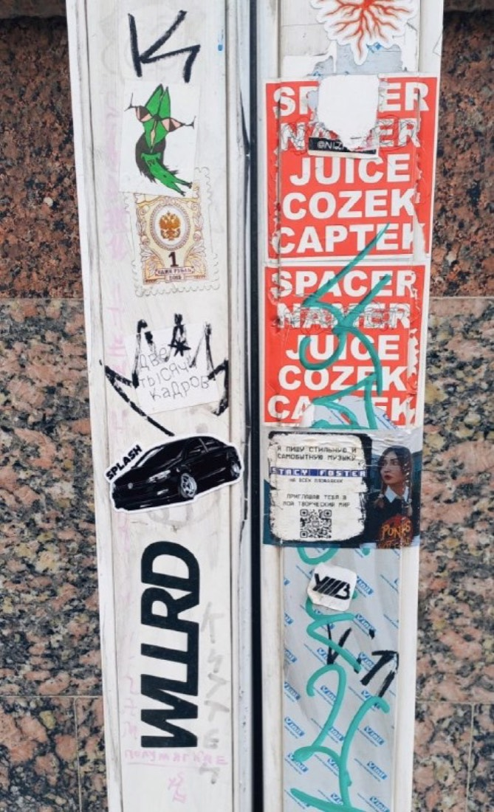
Московский стикер-арт! Клей и точка. Стикеры — трубе протекция от грусти.
фразы из канала @SplashGear
Витрина
8 работ
В кавычках — цитаты из канала @SplashGear.
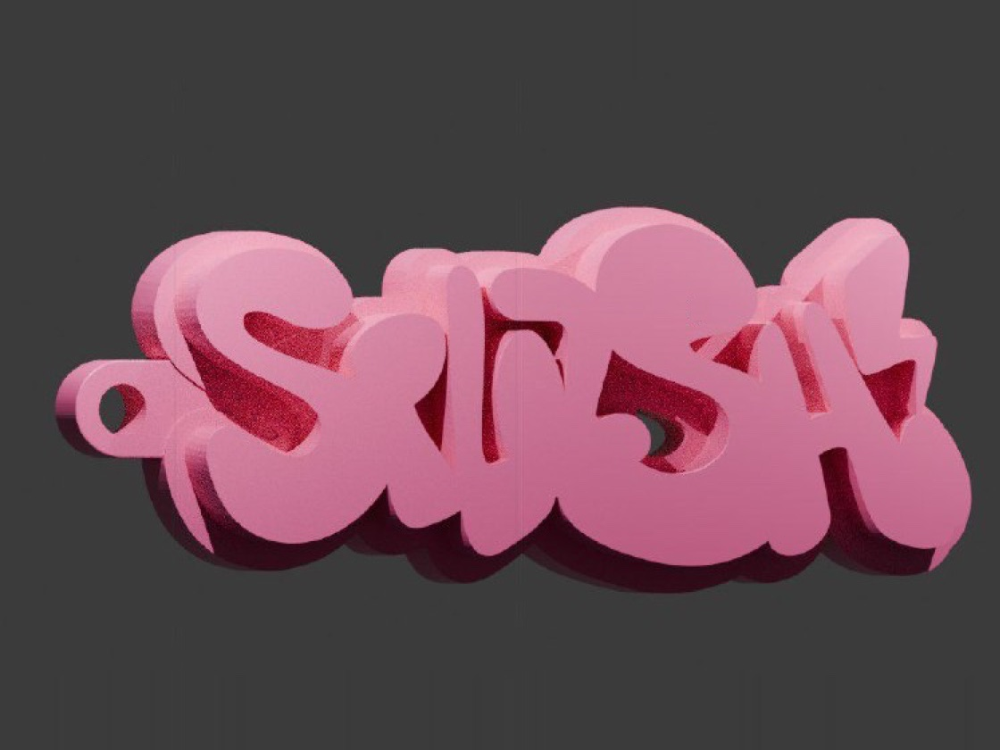
Знак
«Объём не усложняет — он добавляет перспектив.»
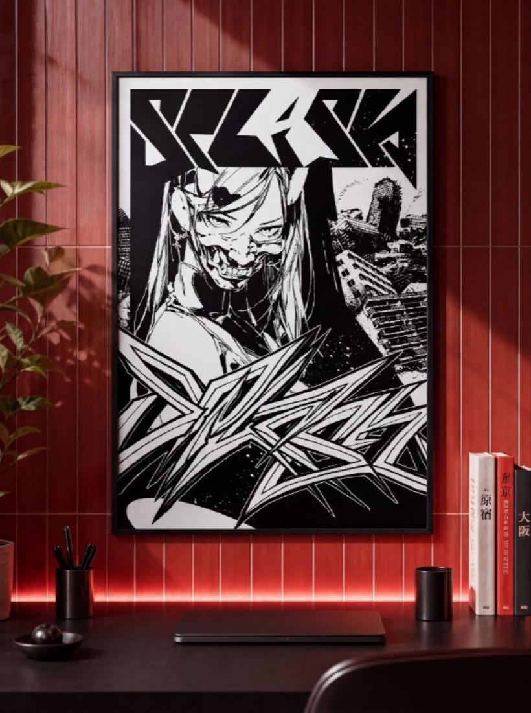
Чёрное на белом или наоборот?
«Стикер-арт в самом эстетичном его проявлении.»
из канала @SplashGear
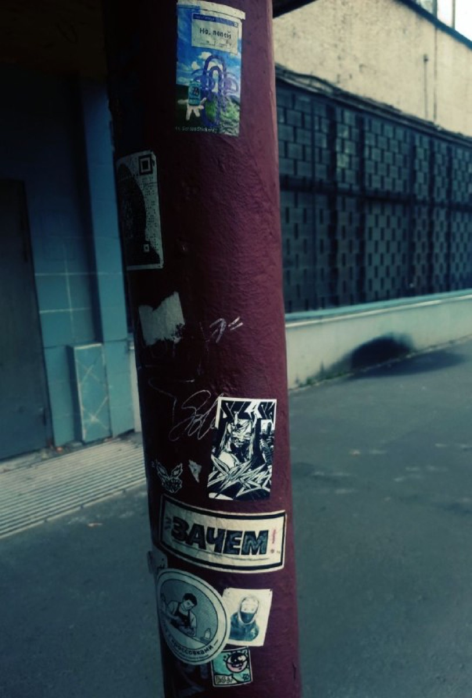
Столб как галерея
городская серия
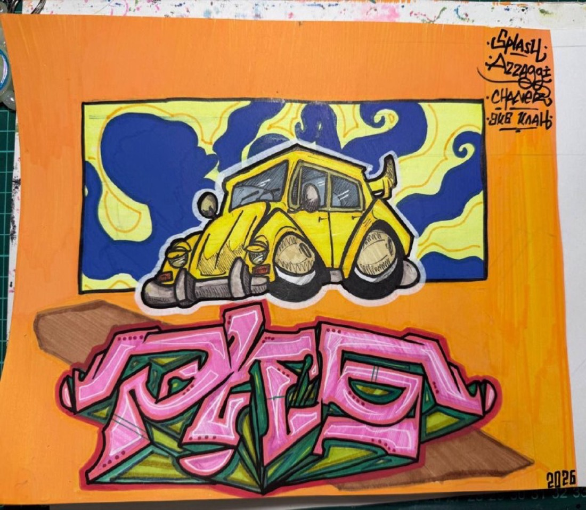
Скетч-баттл с AZZAGGI
«Тематика: авто и мото.»
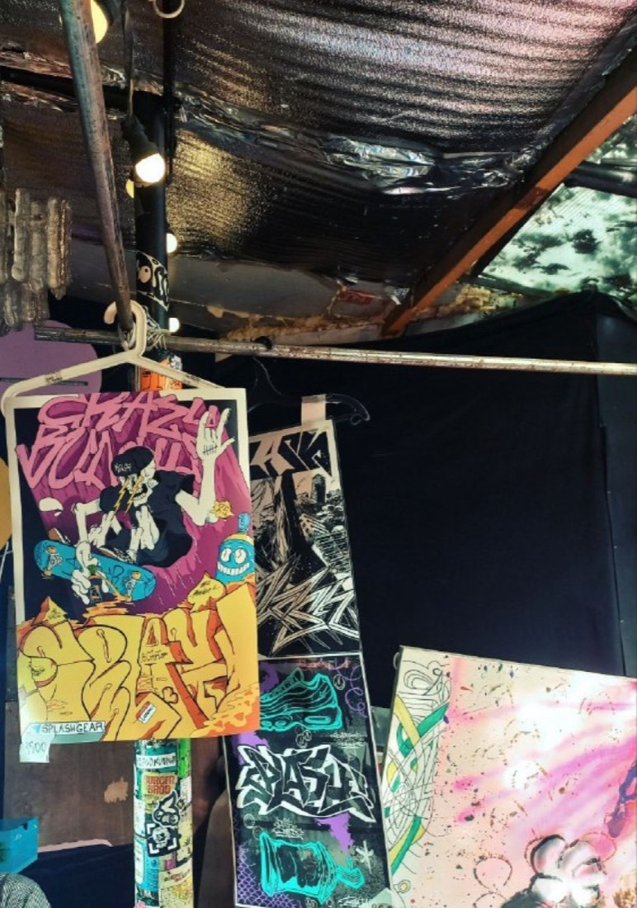
На маркете
«На маркете — наши стикеры, постеры, арт-магниты.»
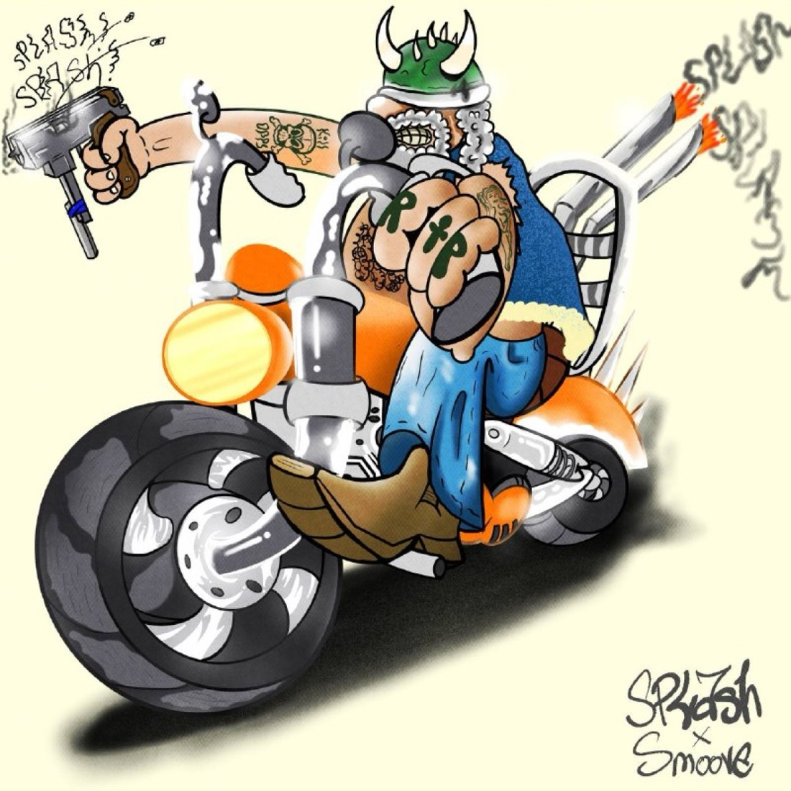
Splash × Smoove
коллаборация
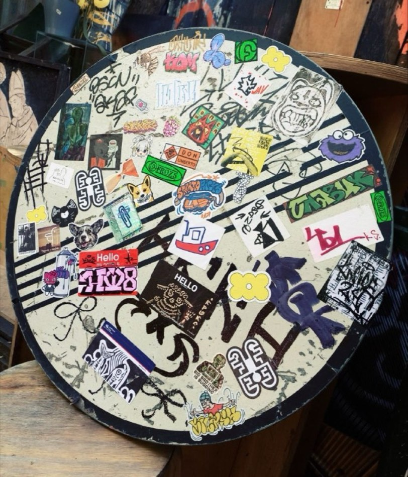
Доска на фестивале
стикеры разных авторов, среди них — Splash!
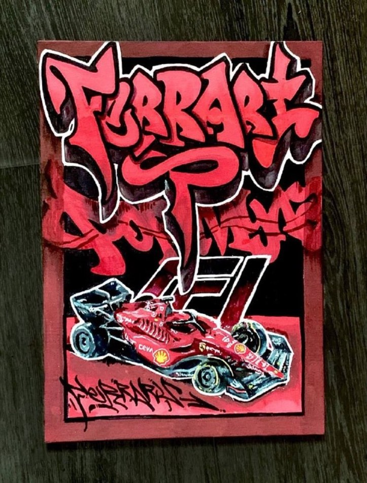
Из скетч-баттла
работа участника, тема «авто и мото»
О бренде
Москва. Стикеры,
постеры, магниты.
Splash! печатает стикер-паки, постеры и арт-магниты и выпускает коллаборации с художниками — часть дизайнов рождается в скетч-баттлах, где рисуют подписчики канала.
Где нас видели
-
август
Mostick Day — маркет: стикеры, постеры, арт-магниты. На нём подклеились на редкий артефакт — стикер Marshmellow, один из первых в коллекции.
-
23 августа
SKATE SCHOOL CON-FEST 4, 23 августа, скейт-парк у ТЦ «Мега Тёплый Стан» — мастер-классы, кастом-зона, finger-зона, скейт-квиз, маркет.
-
6 сентября
Скетч-баттл с AZZAGGI — тема «авто и мото», работы в digital и на бумаге. Победители: Vestral, Suner, Chaner.